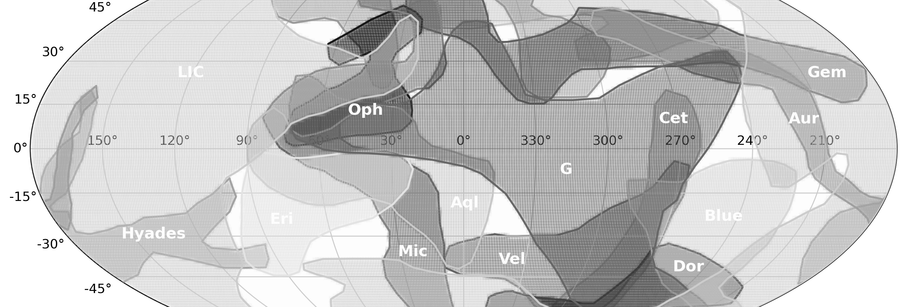
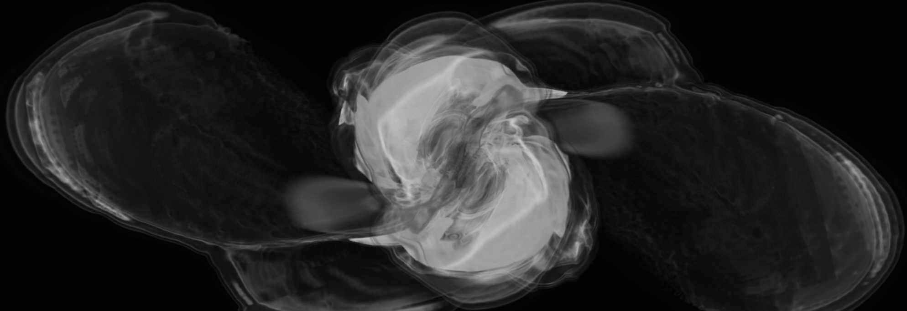
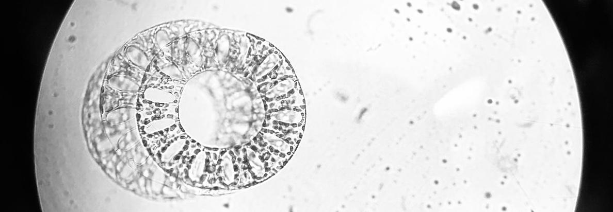

About Me
Education:
M.A. Astronomy / Wesleyan University / Planetary Science Concentration
A.A. Physics & Mathematics / Cabrillo College / High Honors
B.A. English / Oberlin College / Environmental Studies Minor, ΦΒΚ Honors
Research Interests: I am curious about all topics in astrophysics, and engaged with the cultural and ethical contexts of my work. My master's thesis investigates the interstellar cloudscapes that surround the Solar System using new data from the New Horizons mission. In the realm of high-energy astrophysics, I have experience running stellar-evolution stimulations to better characterize stars that have survived an encounter with a supermassive black hole.
Research

Astronomy Master's Thesis, Wesleyan University
Modeling all-sky galactic Lyman-α absorption due to local interstellar medium (LISM) clouds surrounding the Solar System. We predict what the Alice UV spectrograph aboard NASA’s New Horizons spacecraft should see as it reaches the edge of the heliosphere and compare models with New Horizon’s first all-sky observations.
Advisor: Seth Redfield.

Lamat Institute in Computational Astrophysics, UC Santa Cruz
Investigating the characteristics of stars that have survived tidal disruption by a supermassive black hole. Simulating the long-term evolution of tidally disrupted stars using the stellar evolution code MESA. By comparing theoretical deviation of disrupted vs. undisturbed stars, our findings provide observational detection strategies.
Advisor: Enrico Ramirez-Ruiz. Image: Jamie Law-Smith.

Plankton Monitoring Lab, Cabrillo College
Contributed to NOAA/NCCOS west coast plankton monitoring applied research project, increasing understanding of harmful algal blooms in Monterey Bay National Marine Sanctuary. Gained experience in plankton collection and identification, microscopes, data analysis, and scientific illustration.
Advisors: Nicole Crane, Jane Silberstein.
Contact
Email: rbush [at] wesleyan [dot] edu